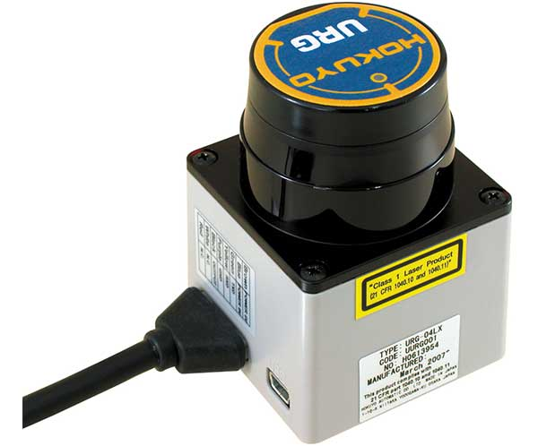
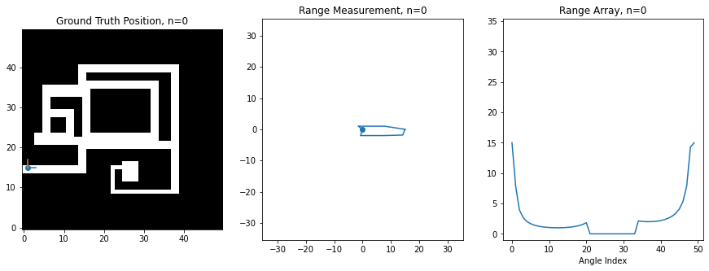
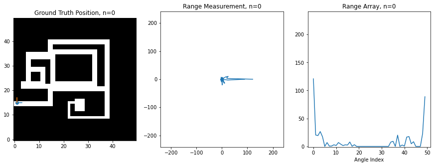
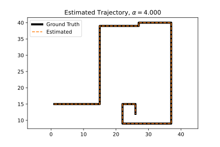
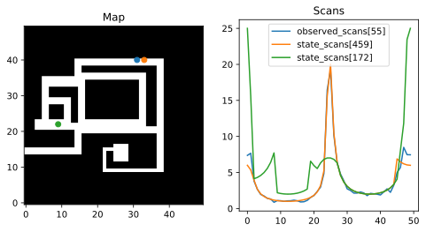
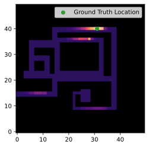
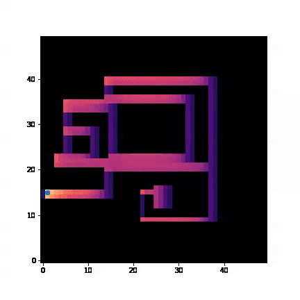
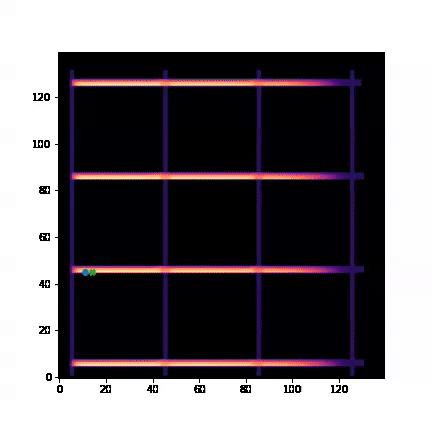
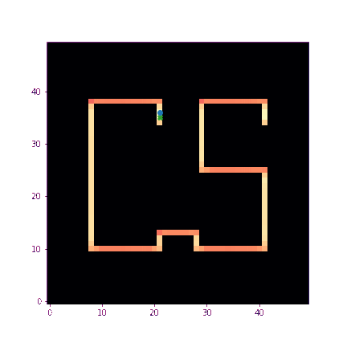
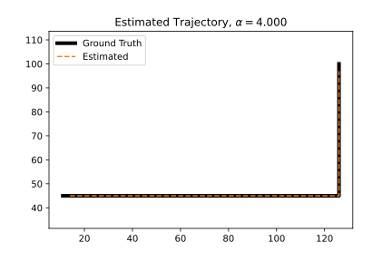

Bayesian Robot Localization
Chris Tralie
- Task 1: Online Position Tracking with Bayes Filtering
- Task 2: Offline Position Tracking with Viterbi
The purpose of this exercise is to track a robot through an environment from noisy measurements using Bayesian algorithms from "Hidden Markov Models (HMMs)." In this case, the hidden states are the position of a robot in 2D, and the observations are omnidirectional range scans. This is an idealized model of a real "LIDAR scanner" such as the Hokuyo URG-04LX laser range scanner, which is able to sweep a laser in a 270 degree field of view in front of it
For this exercise, I've created a synthetic robot that can move right/left/up/down on a 2D grid, and which is always oriented the same way. Below is an image of this robot moving around. The ground truth position of the robot (the hidden state) is shown on the left on a map of the environment, while the laser scan (observation) is shown in the middle. The right shows the scan as stored in an array, which is what you'll be manipulating in code. There is an index in the array for each angle of the scan, and the value at the index corresponds to the range at that angle. 0 degrees is the first element, and 360 degrees is the last element, so you'll notice how the ranges loop around at the boundaries
Noise Model
The above is an idealized example, however, because the scan is rarely this perfect. Usually there is noise that perturbs the true range measurements; that is, we end up measuring that a wall is either closer or further than it actually is at a particular angle. We'll model the noise here as a multiplicative Gaussian; that is, if the ground truth range is r, then the observed range m(r) is
\[ m(r) = r(1 + \alpha n)\]
where n is a "standard Gaussian distributed" random variable with distribution
\[ n \sim \frac{1}{\sqrt{2 \pi}} e^{-n^2/2} \]
and α is some parameter set ahead of time. In other words, the further away the measurement is, the more it can be perturbed. Below is the code I used to sample from this noise model, taking advantage of numpy's built in randn method for sampling random variables from the standard Gaussian
Below is an example where α = 0.1
Below is an example where α = 4
At this level of noise, it seems like we're hardly getting any useful information. However, amazingly, if you use the above sensor model and assume that the robot is equally likely to visit any of its neighbors, then you can actually recover an excellent estimate of the robot's trajectory using the Viterbi algorithm. Below is a plot of the original trajectory next to what the algorithm recovered here (NOTE: results may vary based on the noise samples):
The estimated trajectory is perfect in this example! This is the power of sequence modeling; even if our measurements are total crap at a particular instant in time, if they have even a little bit of signal, then we can "boost" the signal strength by looking at many states in sequence.
Observation Probabilities
The first step in gathering all of the components that are needed for an HMM is to come up with probabilities in an observation/measurement model. Let's let ri be the perfect range measurement of the ith angle at a particular location, and let xi be the corresponding measurement at that angle, sampled according to the model above. Then the probability density of the measured range xi in terms of ri is
\[ p(x_i | r_i) = \frac{1}{\sqrt{2 \pi }(\alpha r_i + \gamma)} e^{-\frac{(x_i-r_i)^2}{2 (\alpha r_i + \gamma)^2}} \]
where γ is a small number to prevent numerical divide by 0 for ranges that are too closes or noise that is too small. In this assignment, we'll let γ = 0.1. Notice how based on the denominator of the exponent, ranges which are further have a higher probability density for the same deviation. This is another way of seeing that the noise is worse for large distances.
Assuming that the angles are all independent of each other, the joint probability of all of the angles in a single scan can be written as the product of all such probabilities at each angle.
Let's think about which states would have a high probability given particular measurements. Below is an image showing an observed scan with its ground truth position indicated as a blue dot on the map, as well as two ideal scans at different positions shown at their state locations as orange and green dots on the map
The orange dot is very close to the measured location, so its scan looks pretty similar. The green dot is far and in a region that looks nothing like the region where the measurement was taken, so its scan is very different. We can see the differences in the plot of the scans. Each angle contributes a probability as in the above equation. Because of the negative exponential which contains -(xi - ri)2, the probability density at a particular angle peaks when xi = ri, and it falls off the further apart they are. So we will incur large penalties in the product for angles that have very different range measurements compared to what should be seen at a state under consideration. These bad angle measurements will drag all of the rest down in the product.

I provided a method called get_measurement_prob that takes in a ground truth scan array, a measured scan array, and the noise value α, and which returns the probability density that a set of measured angles jointly occurred at a particular location. For example, let's suppose we had some measurements with α=0.1. Then running the following cell
would generate the following plot
The brighter the cell, the higher the probability is relative to cells at other locations. You'll notice here that for this particular location (shown in green), it has a high probability around the true location, but it also has a high probability towards the right side of similarly shaped narrow horizontal hallways. As you will see in the tasks below, this kind of confusion can get resolved by tracking measurements over time.
Programming Tasks
Getting Started
Click here to download the starter code for this exercise.
Task 1: Online Position Tracking
You now have all of the ingredients you need to do an online tracking of the robot positions as new measurements come in! You can assume the following two things:
- The robot is equally likely to transition to any of its neighbors. You can look up the neighbors of position
iwithenv.neighbors[i] - The robot is equally likely to start at any position on the grid. This implies that the initial probabilities for each state are 1/K, where K is the number of states.
Your Task
Given all of this information and the measurement model from before, implement Bayes filtering to track the position over time. Be sure to normalize the probabilities at each step so that they all sum to 1! Also, when summing up the transition probabilities from previous states, only consider states which are neighbors of the state you're transitioning to. Otherwise, the program will have O(TK2) complexity instead of O(TK) complexity, and your code will go very slowly.If you've implemented filtering properly, here's what you should see on the trajectory example we've been looking at with α=4 (the actual position is shown as a blue dot, while the maximum probability is shown as a X)
You'll notice some cool things here, how the probability is distributed over all of the cells at first, but how it quickly hones in on the actual location of the robot. You'll also see it hedging its bets between different long and narrow hallways when it happens to be in one, but as soon as it turns a corner or passes a fork in the road, the ambiguity is resolved.
Here's another neat example where you see it gets very confused and estimates it's at the top row instead of the second to the bottom row for a while because of how similar all of the hallways look. The ambiguity is mostly resolved once the robot turns the corner
Here is an example that Marcos Maciel created in Fall 2021:
Task 2: Offline Position Tracking
As you can see, filtering can get confused at individual steps, and we know if we can do things offline (i.e. we have access to all measurements over time), we can maximize the joint probability over the whole trajectory using the Viterbi algorithm. This will fix things up so the trajectory doesn't jitter around as much locally, since it enforces consistency of the whole trajectory.
Your Task
Implement the Viterbi algorithm to compute an optimal sequence of state indices given an array of measurements. Since you'll be accumulating over many states, be sure to add log likelihoods, as explained in the notes rather than multiplying probabilities.NOTE: If you use the same measurement probability function as you did in the last section and then you take the log, you might suffer from underflow and get complaints about taking the log of 0. Instead, you should create a different version of your measurement function where you use a different analytical expression to compute the log probability directly. You can use the following three facts about logs:
- \[ \log(AB) = \log(A) + \log(B) \]
- \[ \log \left( \frac{1}{x} \right) = -\log(x) \]
- \[ e^{\log(x)} = x, \log(e^x) = x \]
\[ \log \left( \left( \frac{1}{\sqrt{2 \pi }(\alpha r_i + \gamma)} \right) e^{ -\frac{(x_i-r_i)^2}{2(\alpha r_i + \gamma)^2}} \right) = -\log \left( \sqrt{2 \pi }(\alpha r_i + \gamma) \right) -\frac{(x_i-r_i)^2}{2(\alpha r_i + \gamma)^2} \]
If your code works properly, you should get perfect results with α=4 on Maze1.png
You should also get nearly perfect results with α = 4 for the trajectory on the second map
For The Bored...
If you finish this early, here are a few things you can try
- In addition to modeling the position, allow the robot to rotate. How would you change your state space? How would you update your observations to handle a rotation?
- The above is going to blow up the state space in memory. Think of how you could use a particle filter to address this.
- Think about how you might store some "second order" information about where the robot has been like velocity. If we assume the law of inertia, the robot is more likely to continue moving in the direction of its velocity than it is to make a sudden turn, so you can use non-uniform transition probabilities to neighbors.